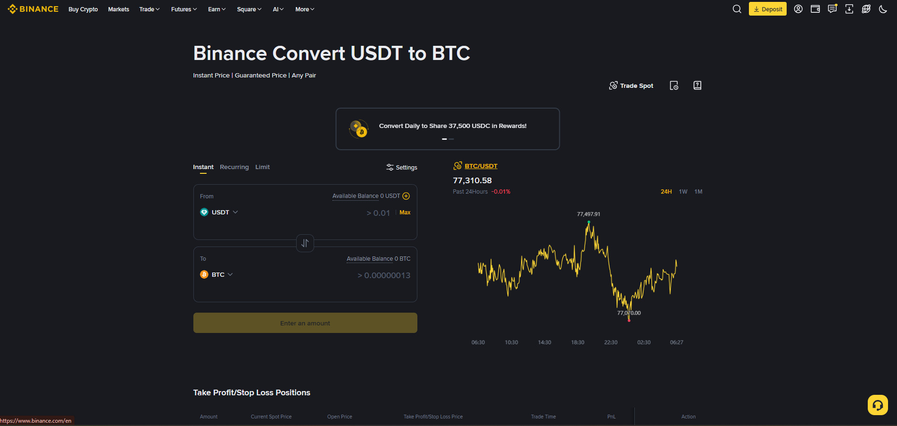

Convert بائننس کا سب سے آسان ٹول ہے — ایک کرپٹو کو دوسرے میں بدلیں، نہ چارٹ، نہ آرڈر بک، نہ پیچیدہ ترتیبات۔ صرف From اور To منتخب کریں۔ مگر آسان ٹول کے پیچھے ایک خفیہ قیمت (اسپریڈ) چھپی ہوتی ہے — یہ باب وہ بھی کھولتا ہے۔

Convert میں آپ ایک کرپٹو کو سیدھا دوسرے میں بدلتے ہیں۔ بائننس آپ کے لیے فوری قیمت (Quote) طے کرتا ہے اور کچھ سیکنڈوں میں تبدیلی مکمل کر دیتا ہے۔
From: 100 USDT
To: BTC
Rate: 1 BTC = $96,000
You Get: ~0.00104 BTC
Time: چند سیکنڈ
✅ مکملجیسے آپ کسی صراف (Money Changer) کے پاس جاتے ہیں — "مجھے 100 ڈالر کے پاکستانی روپے چاہییں" — وہ فوراً ریٹ بتا کر تبادلہ کر دیتا ہے۔ Convert بھی بالکل ایسا ہی ہے — سادہ، فوری، مگر ریٹ میں صراف کی (اسپریڈ کی) گنجائش شامل ہوتی ہے۔
آپ کے پاس 100 USDT ہیں، BTC خریدنا ہے:
طریقہ 1: Convert
Rate پیش کی: 1 BTC = $95,900 (اسپریڈ)
آپ کو ملا: 0.0010428 BTC
طریقہ 2: Spot Limit
مارکیٹ ریٹ: 1 BTC = $96,000
آپ کو ملا: 0.0010417 BTC ...wait💡 نتیجہ: Convert میں آپ کو تھوڑا کم کوائن ملتا ہے — یہی فرق Convert کی قیمت ہے۔
1. آپ From کوائن منتخب کرتے ہیں (مثلاً USDT)
2. آپ To کوائن منتخب کرتے ہیں (مثلاً BTC)
3. بائننس مارکیٹ سے فوری Quote (ریٹ) نکالتا ہے
4. آپ Confirm کرتے ہیں
5. کچھ سیکنڈوں میں تبدیلی مکمل — کوائن آپ کے وولیٹ میں⚠️ Convert میں الگ "فیس" کا لیبل نہیں ہوتا، مگر خالی نہیں ہوتا۔ بائننس جو ریٹ دیتا ہے وہ مارکیٹ کے سب سے بہترین ریٹ سے تھوڑا مختلف ہوتا ہے — یہی فرق Convert کی قیمت ہے۔
مارکیٹ ریٹ (Spot Order Book): 1 BTC = $96,000
Convert نے پیش کیا: 1 BTC = $95,904 (تقریباً 0.1% کم)
فرق = Convert کی گنجائش (اسپریڈ)آپ 1,000 USDT کو BTC میں بدلتے ہیں:
مارکیٹ ریٹ: 1 BTC = $96,000
Convert ریٹ: 1 BTC = $95,800 (0.2% اسپریڈ)
مارکیٹ کے مطابق: 0.010417 BTC
Convert میں ملا: 0.010439 BTC ...wait💡 نتیجہ: چھوٹی رقم میں یہ فرق معمولی ہوتا ہے ($2-3)، مگر بڑی رقم میں یہ نمایاں ہو جاتا ہے — اسی لیے بڑی رقم کے لیے Spot (Limit Order) بہتر ہے۔
1. ہوم پیج → Convert کارڈ پر کلک کریں
2. From: USDT منتخب کریں
3. To: BTC منتخب کریں
4. Amount: 100 USDT لکھیں
5. Quote دیکھیں: ~0.00104 BTC
6. Confirm → مکمل ✅1. اوپر بار → Trade ▾
2. Convert منتخب کریں
3. From, To, Amount منتخب کریں
4. Confirm1. Wallet → کوائن منتخب کریں (مثلاً USDT)
2. Convert بٹن پر کلک کریں
3. To: دوسری کرنسی منتخب کریں
4. Confirm💡 تیسرا راستہ سب سے تیز ہے — جب آپ کوئن وولیٹ میں دیکھ رہے ہوں اور تبدیل کرنا چاہیں۔
Advanced Convert بنیادی Convert کا پروفیشنل ورژن ہے — یہاں آپ اپنی مرضی کی قیمت مقرر کر سکتے ہیں، بالکل Limit Order کی طرح۔
| پہلو | بنیادی Convert | Advanced Convert |
|---|---|---|
| ریٹ | بائننس طے کرتا ہے | آپ ہدف رکھتے ہیں |
| انتظار | فوری | تب تک، جب تک ریٹ نہ ملے |
| اسپریڈ | ہر بار | آپ کی قیمت پر کم |
| بڑی رقم | ❌ کم موزوں | ✅ موزوں |
1. Convert → Advanced (یا "Limit" تب)
2. From: USDT، To: BTC
3. Amount: 1,000 USDT
4. Target Rate: 1 BTC = $95,500
5. Order لگا دیں
6. جب مارکیٹ اس ریٹ پر آئے → تبدیلی خودکار ✅💡 یاد رکھیں: Advanced Convert میں انتظار ہے — اگر مارکیٹ آپ کے ریٹ پر نہ آئے، تو تبدیلی نہیں ہوگی۔
| فائدہ | وضاحت |
|---|---|
| سب سے آسان | کوئی چارٹ نہیں، کوئی آرڈر بک نہیں |
| فوری | چند سیکنڈوں میں مکمل |
| کوئی مفت فیس نہیں | الگ فیس کا لیبل نہیں (مگر اسپریڈ موجود) |
| ہر وقت | 24/7 دستیاب |
| بہت سے جوڑے | USDT↔BTC↔BNB وغیرہ |
| نئے صارف کے لیے | دہرانے کا کوئی خطرہ نہیں |
| حد | تفصیل |
|---|---|
| اسپریڈ | مارکیٹ ریٹ سے تھوڑا کم ریٹ |
| کوئی Order Book نہیں | درست قیمت خود نہیں چن سکتے (بنیادی میں) |
| بڑی رقم | Spot سے بہتر ریٹ مل سکتا ہے |
| نئی/چھوٹی کرنسیاں | صرف مشہور کوائنز دستیاب |
| صورتحال | Convert? |
|---|---|
| جلدی کوائن بدلنا ہو | ✅ جی |
| مبتدی ہیں اور سادگی چاہیے | ✅ جی |
| چھوٹی رقم (کچھ سو ڈالر) | ✅ جی |
| کوئی ٹریڈنگ نہیں، صرف تبدیلی | ✅ جی |
| USDT سے BNB فیس کے لیے | ✅ جی |
| صورتحال | Convert? | بہتر |
|---|---|---|
| بڑی رقم ($10,000+) | ❌ Spot Limit | |
| درست قیمت چاہتے ہوں | ❌ Spot Limit | |
| Stop-Loss یا TP لگانا ہو | ❌ Spot آرڈرز | |
| ٹریڈنگ اسٹریٹجی | ❌ Spot/Futures | |
| نئی کرنسی جو Convert میں نہیں | ❌ Spot |
| فیچر | Convert | Spot |
|---|---|---|
| سادگی | بہت زیادہ | درمیانی |
| ریٹ | اسپریڈ شامل | مارکیٹ ریٹ (بہتر) |
| آرڈر بک | ❌ نہیں | ✅ ہے |
| Limit/Target ریٹ | بنیادی میں نہیں (Advanced میں ہاں) | ✅ ہے |
| بڑی رقم | ❌ کم موزوں | ✅ موزوں |
| فیصلہ کا وقت | سیکنڈز | منٹس |
| مبتدی | ✅ بہترین | سیکھنا ضروری |
| حد | تفصیل |
|---|---|
| کم از کم | عموماً چند ڈالر کے برابر |
| زیادہ سے زیادہ | KYC درجے کے مطابق (Verified Plus زیادہ) |
| دستیابی | 24/7 |
| جوڑے | زیادہ تر مشہور کوائنز دستیاب |
| ریٹ کی میعاد | Quote چند سیکنڈ کے لیے طے، پھر بدل جاتا ہے |
💡 اگر آپ کو زیادہ حد چاہیے: اپنا KYC درجہ بڑھائیں (باب 3) — Verified Plus کو زیادہ حدود ملتی ہیں۔
Convert ایک صراف ہے، ایکسچینج نہیں۔ صراف سے آپ جلدی اور آسانی سے رقم بدل سکتے ہیں — مگر بہترین ریٹ وہ صراف کی جیب میں رکھتا ہے۔ اسی طرح Convert آسانی دیتا ہے، مگر بڑی رقم میں Spot Limit کی بھیڑ (Order Book) آپ کو بہتر قیمت دیتی ہے۔
چھوٹی رقم = Convert، بڑی رقم = Spot۔ یہ ایک سادہ اصول ہے جو آپ کے سالوں کی بچت بنا سکتا ہے۔